地政学
チューリッヒは連邦首都ではありませんが、金融、保険、空港、鉄道、大学を通じてスイスの国際接続を担います。中立国の安定、欧州市場との距離、アルプス北側の交通が、都市の小ささを超えた大きな重みを与えます。

🇨🇭 スイス / ヨーロッパ / World City Atlas
湖と川、丘陵、鉄道、金融、大学研究が高密度に重なるスイス最大都市です。富と安定の印象の内側に、住宅費、多言語労働、移民、気候適応、国際都市の格差が見える街です。
都市の骨格
チューリッヒはスイスの政治首都ではありませんが、金融、保険、研究、鉄道、空港、多言語労働を通じて国の外向きの力を担います。旧市街と湖畔の小ささの中に、世界市場と高い生活費が重なります。
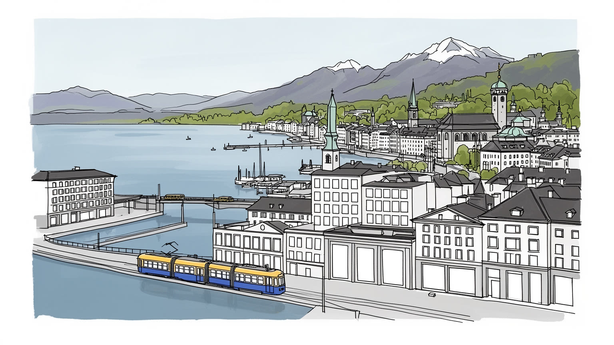
チューリッヒは連邦首都ではありませんが、金融、保険、空港、鉄道、大学を通じてスイスの国際接続を担います。中立国の安定、欧州市場との距離、アルプス北側の交通が、都市の小ささを超えた大きな重みを与えます。
銀行、保険、法律、IT、大学研究、観光、医療が雇用を厚くします。一方で清掃、介護、飲食、建設、交通、ホテル、路上の小商いも不可欠で、豊かさは幅広い現場労働に支えられます。市場や観光客対応も街を支えます。
改革派教会、カトリック、ユダヤ人社会、イスラム、移民の礼拝、芸術大学、劇場、クラブ、メディア、湖畔の余暇が重なります。祝祭と食、スポーツも、ドイツ語圏だけでは説明できない生活文化を作ります。夜もあります。
旅行者は旧市街、湖畔、美術館、カフェ、山の眺めを楽しみ、住民には家賃、保育、通勤、移民の資格、物価、静けさを守る規制が切実です。美しい都市景観の下に、生活費の緊張があります。日常の重い課題になります。
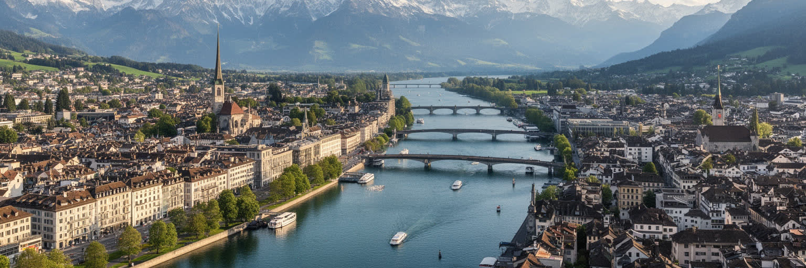
チューリッヒを読む入口は、湖からリマト川が流れ出す場所に都市が置かれていることです。旧市街は川の両岸に密に広がり、湖岸の遊歩道、丘陵の住宅地、大学地区、鉄道駅、金融街が短い距離でつながります。水辺は観光の背景であるだけでなく、都市の気候、余暇、土地価格、交通、洪水対策を決める基盤でもあります。湖面は夏の水泳やランニングを誘い、霧の冬には街を低く包み、雪の日には鐘の音とトラムの音が湿った石畳に残ります。背後のユトリベルクや周辺の丘は、都市を大きく見せず、谷筋と水辺へ人の動きを集めます。アルプスは遠景として都市の誇りを支えますが、日常の地形はもっと細かい坂、橋、岸辺、川風、自転車の速度として現れます。中心部の土地は限られ、湖と丘に挟まれた美しい形が住宅費と再開発の圧力を高めます。チューリッヒの景観は、自然と都市が調和しているように見えますが、その調和は水質管理、公共岸辺の確保、交通規制、建築高さ、緑地保全の長い調整によって維持されています。湖畔を歩くと、金融都市の硬さとは違う市民の余暇が見える一方、誰が水辺に近く住めるのかという格差も見えます。水と丘が与える美しさは、都市の魅力であると同時に、土地の希少性を強める条件でもあります。さらに、湖岸の公共性を守るか、富裕層の眺望へ閉じるかは、都市の価値観を映します。
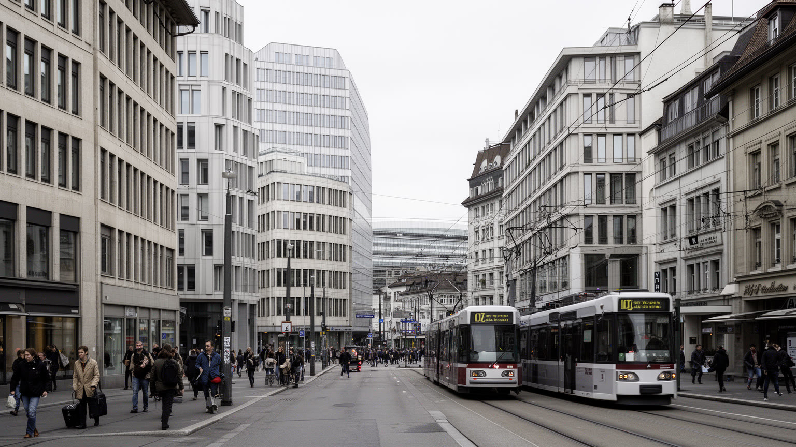
チューリッヒの国際的な名声は、銀行、保険、資産運用、法律、会計、コンサルティングの集積に支えられます。バーンホフ通り周辺の整った街路は派手な金融街ではありませんが、個人資産、年金、企業資金、国際取引、保険リスクを扱う専門職と、高級店、時計、チョコレート、買い物客が同じ歩道を共有します。スイスの政治的安定、通貨への信頼、法制度、慎重な金融文化は、都市の小さな面積に大きな資本を引き寄せてきました。一方で、金融の歴史には守秘、租税、資金の出所、制裁、国際規制との緊張もあります。近年は透明性、コンプライアンス、デジタル金融、サステナブル投資が重視され、古い銀行都市のイメージは変わりつつあります。保険業は再保険、災害リスク、気候変動、医療、企業活動と結びつき、金融を単なる富の保管ではなく、世界の不確実性を価格に変える仕事にしています。高い給与は都市の消費を支えますが、家賃、飲食、サービス価格を押し上げ、金融部門以外で働く人の生活を圧迫します。チューリッヒを金融都市として読むには、銀行の建物だけでなく、規制担当者、IT技術者、清掃員、受付、警備、法律事務所、近郊から通う労働者を同じ経済の一部として見る必要があります。資本の静けさは、都市の秩序を作りますが、富がどこへ配分されるかを問い続けます。金融危機や銀行再編の記憶は、安定した街にもリスクがあることを示します。
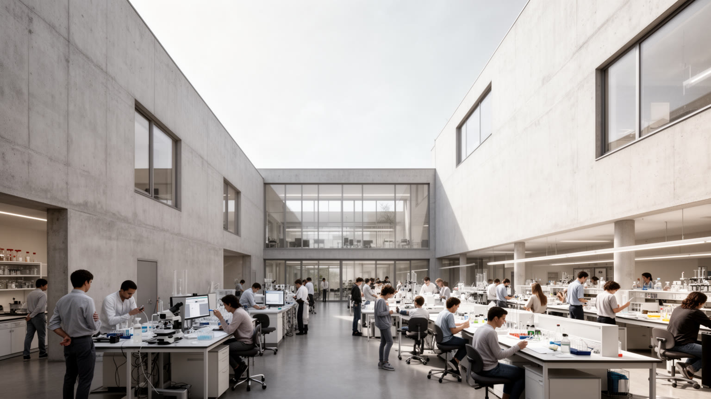
チューリッヒは金融だけでなく、大学と研究の都市でもあります。ETHチューリッヒとチューリッヒ大学は、工学、自然科学、医学、経済、社会科学、建築、情報科学を通じて国際的な学生と研究者を集めます。丘上のキャンパス、研究病院、実験施設、スタートアップ支援、企業の研究拠点は、都市の小さな中心部から世界の知識ネットワークへ接続しています。人工知能、ロボティクス、気候科学、生命科学、金融工学、都市計画の研究は、銀行や保険とは別の都市の未来を作る力になります。学生の流入は多言語の活気を生み、講義後のカフェ、学生食堂、川辺の読書、安い部屋探しを街の日常に混ぜますが、生活費、ビザ、短期雇用、研究者の競争も伴います。高い教育水準はチューリッヒの国際性を支える一方、大学と都市の距離をどう縮めるかも課題です。研究成果が企業へ移る速度が速いほど、公共性、データ倫理、知的財産、労働条件、住宅費との関係を丁寧に考える必要があります。キャンパスは観光名所ではありませんが、図書館、講義室、研究室、学生食堂、病院の廊下は都市を支える重要な公共空間です。チューリッヒを知識都市として読むには、金融の安定だけでなく、研究に失敗できる時間、若い人が住める部屋、多様な背景の学生を受け入れる制度を見る必要があります。知識の集積は、資本と同じくらい都市の将来を左右します。
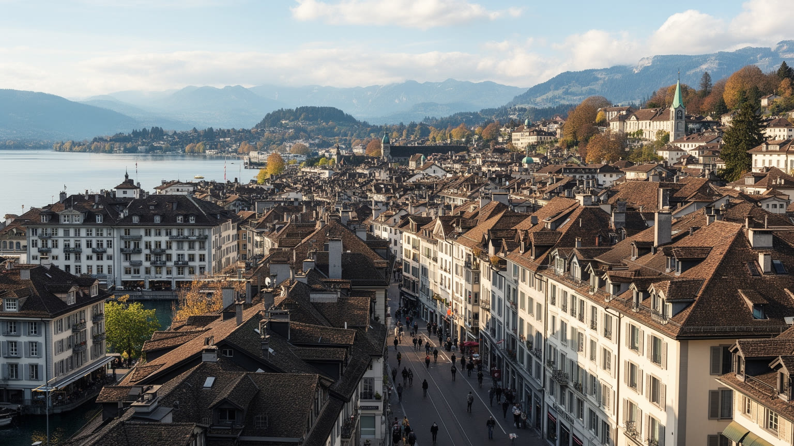
チューリッヒの暮らしやすさは、同時に住まいの難しさでもあります。湖、丘、良質な公共交通、治安、学校、医療、職場への近さは都市の魅力を高めますが、中心部の土地は限られ、賃貸市場は強い競争にさらされます。金融、研究、国際企業で働く高所得者が集まり、学生、若い家族、単身者、移民労働者、サービス職の住まいは探しにくくなります。子どものいる世帯には保育園と学校区、高齢者には段差の少ない住まい、医療、近所の買い物が切実です。スイスには協同組合住宅や公共的な住宅供給の伝統があり、チューリッヒでも家賃を抑えた住まいを守る試みがありますが、需要の増加はそれを上回りやすいです。古い工業地の再開発は住宅と職場を増やす可能性を持つ一方、地区の性格を変え、家賃を押し上げます。湖畔に近い静かな住宅地と、郊外や周辺自治体から通う労働者の生活は、同じ都市経済に属しながら時間と費用が大きく違います。住宅費は、家計だけでなく、保育、通勤、近隣関係、学校選択、移民の定着、文化活動の場所に影響します。チューリッヒを生活都市として読むには、高い生活の質を支える制度と、その質に届かない人の距離を同時に見る必要があります。住みやすい街が、働く人を外へ押し出すなら、都市の便利さは内側から弱くなります。住宅は個人の市場選択だけでなく、都市が誰を住民として迎えるかという公共の判断でもあります。
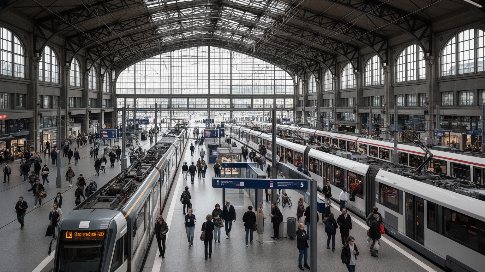
チューリッヒの都市生活は、鉄道、トラム、バス、Sバーン、湖船、徒歩、自転車が細かく組み合わさることで成り立ちます。中央駅はスイス最大級の結節点であり、国内各地、ドイツ、オーストリア、イタリア方面への鉄道、空港連絡、都市圏の通勤を束ねます。トラムは旧市街、大学、湖畔、住宅地、商業地を短い間隔で結び、軋む音とベルが朝の街路に時間の感覚を作ります。湖畔では通勤前に走る人、自転車で橋を渡る学生、川風を受けて歩く高齢者が同じ動線を使います。空港は金融、国際企業、会議、観光、研究者の移動を支え、都市の外向きの力を強めます。公共交通の信頼性は生活の質を高めますが、混雑、料金、深夜移動、郊外との接続、工事、障害のある人の利用しやすさは常に調整が必要です。鉄道の便利さは、中心部に住めない人にも機会を開く一方、周辺自治体へ住宅圧力を広げます。朝の駅には銀行員、学生、研究者、清掃員、ホテル従業員、建設労働者、観光客が同時に流れ込みます。チューリッヒを交通都市として読むには、時刻表の正確さだけでなく、誰が何時にどこから通い、どれだけの家賃と時間を負担しているのかを見る必要があります。歩きやすい水辺と密なトラム網は都市の魅力ですが、その背後には運転士、保守、駅清掃、交通計画、財源の継続があります。移動の質は、都市の公平性を測る静かな尺度です。
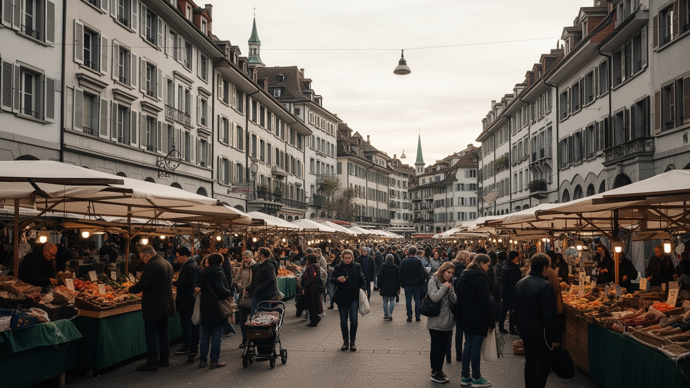
チューリッヒはドイツ語圏の都市でありながら、日常の街路には多くの言語が響きます。スイス国内の他地域からの移動、イタリア、ドイツ、ポルトガル、バルカン半島、トルコ、東欧、アジア、アフリカ、ラテンアメリカからの移民、国際企業や大学の専門職が、都市の労働と生活を作ります。標準ドイツ語、スイスドイツ語、英語、イタリア語、フランス語、ポルトガル語、アルバニア語、トルコ語などが、学校、病院、店、オフィス、駅、家庭で使い分けられます。多言語性は国際都市の魅力ですが、行政手続き、住まい探し、学校選択、資格認定、職場の昇進では壁にもなります。高技能の外国人専門職は国際企業に迎えられる一方、清掃、介護、飲食、建設、物流、ホテルで働く移民は不規則な時間と高い生活費に向き合います。信仰の場も多様で、改革派やカトリックの教会だけでなく、イスラムの礼拝、正教会、ヒンドゥー、仏教、ユダヤ人社会の記憶が都市にあります。チューリッヒを多言語都市として読むには、英語が通じる金融街だけでなく、移民の食料品店、肉屋、パン屋、送金店、語学支援、職業訓練、学校の保護者会、礼拝後の会話を見る必要があります。秩序ある都市の表情は、多様な人が規則を理解し、同時に自分の文化を保てる時に強くなります。包摂は美しい標語ではなく、窓口と教室と職場で毎日試されます。子どもの通訳、親の就労、近所の祭りは、その試験が日常にあることを教えます。
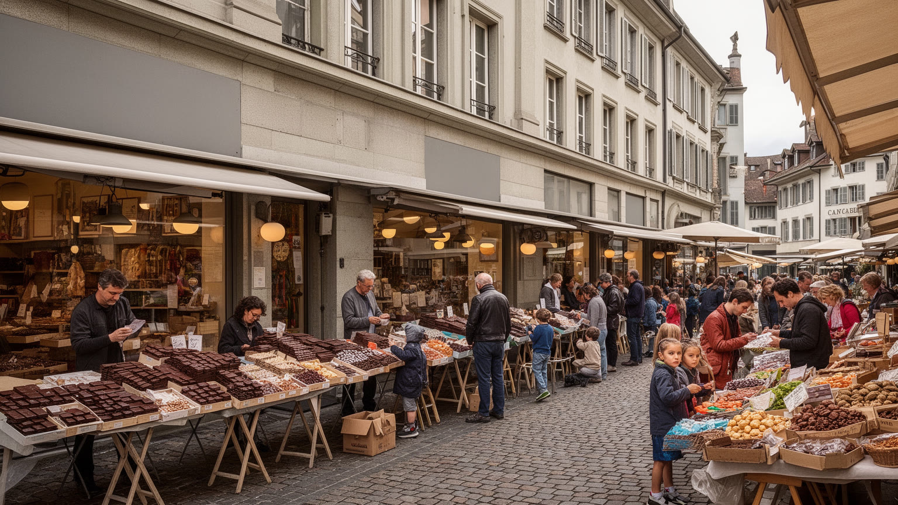
チューリッヒの文化は、金融都市の整った印象よりも幅広いです。オペラハウス、劇場、美術館、ギャラリー、映画祭、デザイン、クラブ、音楽、文学、大学の公開講座、新聞や放送の編集現場が、湖畔の余暇と近い距離で存在します。ダダイズムの記憶は、規律ある都市の中にも実験的な表現が生まれることを示しています。食の面では、ツュリヒャー・ゲシュネッツェルテのような郷土料理、チーズ、パン、チョコレート、カフェ文化、市場の野菜や花に加え、イタリア料理、バルカン、トルコ、アジア、アフリカ、ラテンアメリカの店が日常を豊かにしています。高級レストランと湖畔のカフェは訪問者に分かりやすいですが、都市の食を支えるのは早朝の仕込み、学校や職場の昼食、スーパー、移民商店、配達、ホテルの厨房です。文化産業は都市の魅力を高める一方、作家、音楽家、舞台スタッフ、小さな店は高い家賃に悩みます。FC Zurich、Grasshopper、ZSC Lionsの試合日は、サッカー場やアイスホッケーのアリーナ周辺に別の熱を生みます。クラブや夜の音楽は静けさの規制とぶつかり、Sechseläuten、Street Parade、クリスマスマーケットは季節ごとに街の表情を変えます。チューリッヒを文化都市として読むには、湖畔の美しさと同時に、実験的な小劇場、移民の食堂、学生の制作場所、礼拝後の食事、地元の市場を見る必要があります。食と文化は富を飾るものではなく、多様な住民が都市を自分の場所にするための入口です。
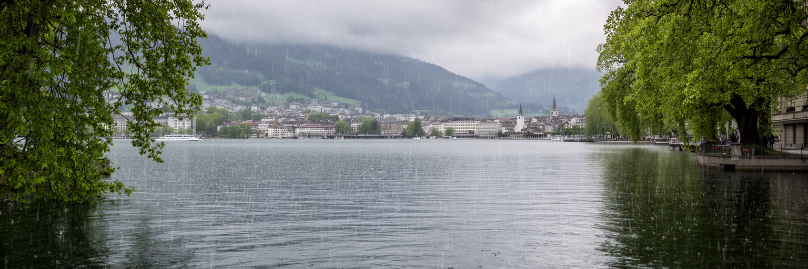
チューリッヒの気候は、湖と丘に近い穏やかさを持つ一方、冬の霧、冷たい雨、夏の熱波、強い雷雨を経験します。湖と川は水浴、散歩、船、景観を与え、都市の健康と余暇を支える重要な公共空間です。夏の湖畔には泳ぐ人、昼休みに走る人、自転車で水辺を抜ける人が集まり、朝はコーヒーとパンの匂い、夕方は川風が街を動かします。水質の良さは自然に保たれているのではなく、下水処理、流域管理、規制、長い環境投資の成果です。気候変動はこの安定した印象を揺らします。熱波が増えれば、石畳や密な市街地は暑くなり、高齢者、子ども、屋外労働者、冷房の弱い住宅に負担がかかります。集中豪雨は排水と河川管理を試し、湖岸や地下空間の備えを重要にします。アルプスの積雪や氷河の変化は、遠くの山の問題に見えても、水資源、観光、保険、エネルギー、災害リスクを通じて都市に戻ってくります。チューリッヒの気候政策は、公共交通や省エネルギー住宅だけでなく、街路樹、日陰、緑地、水辺へのアクセス、建物の断熱、低所得世帯の光熱費にも関わります。湖畔の美しい夏を楽しめる人がいる一方、暑い厨房や建設現場で働く人もいます。気候の視点で都市を読むには、湖面の輝きだけでなく、排水路、木陰の少ない通り、古い建物、保険料、熱に弱い住民を見る必要があります。水の豊かさは都市の誇りですが、それを公平に守る制度がなければ、気候リスクは静かに格差を広げます。
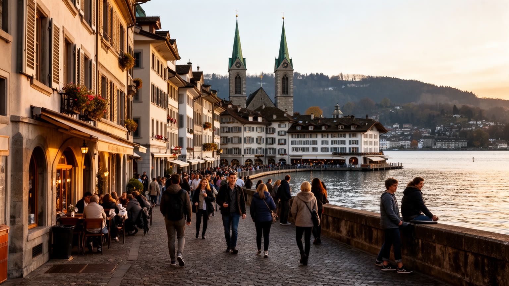
チューリッヒ観光は、都市の小さな歩きやすさを生かしています。中央駅からリマト川沿いへ出ると、旧市街の路地、グロスミュンスター、フラウミュンスター、聖ペーター教会、橋、カフェ、書店、ブティックが近い距離に並びます。バーンホフ通りでは高級店と土産物、時計、チョコレートの買い物が続き、冬はクリスマスマーケットの灯りと甘い匂いが駅前を変えます。湖畔へ歩けば、遊歩道、船、山の遠景、美術館、オペラハウスが視界に入り、短い滞在でも水と都市の関係を感じられます。観光客にとっては清潔で安全で効率的な都市ですが、その印象は交通、清掃、警備、ホテル、飲食、案内、公共トイレの維持に支えられます。旧市街の美しさは保存された建物だけでなく、日常の商店、住民の静けさ、通勤者の流れと共存しています。観光が増えるほど、短期滞在、土産物化、価格上昇、混雑、騒音への注意が必要になります。教会の鐘、トラムの通過音、焼きたてのパンとコーヒーの匂いは、写真では残りにくい都市の記憶です。チューリッヒを観光都市として読むには、名所を効率よく巡るだけでなく、朝の市場、湖畔で泳ぐ住民、旧市街で働く店員、ホテル清掃、駅前の小さな路上経済、鉄道で来る日帰り客を同じ視野に入れる必要があります。観光の魅力は、訪問者の快適さと住民の日常が壊れずに重なる時に最も強くなります。写真に残る路地の静けさも、住民の睡眠と商いへの配慮があって保たれます。
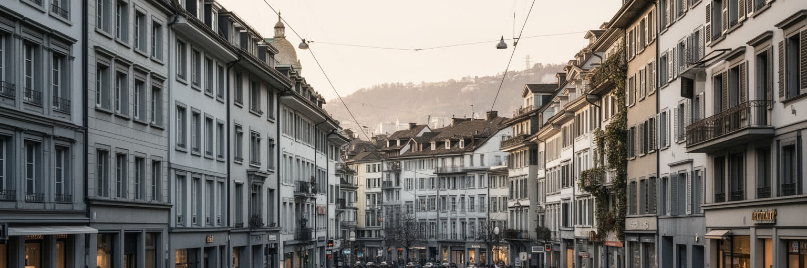
チューリッヒは世界でも生活水準の高い都市として語られますが、その豊かさは均一ではありません。金融と研究の高所得職、安定した公共サービス、清潔な街路、良質な交通は都市の強さを示す一方、家賃、物価、保育費、医療保険、外食費は住民に重くのしかかります。高い賃金を得る人には快適な都市でも、サービス業、介護、清掃、ホテル、飲食、建設、学生、単身の若者、在留資格に制約のある移民には、生活費が大きな壁になります。子どもの放課後の居場所、高齢者の孤立、観光客向けの短時間労働、駅前で小さく稼ぐ人の姿は、豊かな都市の別の面です。スイスの制度は安定していますが、資格、言語、学歴、国籍、ネットワークの差は労働市場で現れます。国際都市の開放性は、企業や大学が求める人材には広く見える一方、低賃金労働者には住まいと時間の制約として感じられます。公共空間はよく管理されていますが、管理の強さはホームレス、若者、夜の文化、移民の集まりに対して排除的に働く場合もあります。チューリッヒを格差の視点で読むには、貧困が目立ちにくいこと自体を手がかりにする必要があります。困難は郊外通勤、過密な住まい、補助制度の手続き、孤独、見えない差別、資格の壁として現れることが多いです。豊かな都市の成熟は、平均所得や安全性だけでなく、支える仕事をする人が尊厳を持って住み、休み、子どもを育てられるかで測られます。静かな秩序の内側にある段差を見なければ、都市の本当の強さは理解できません。
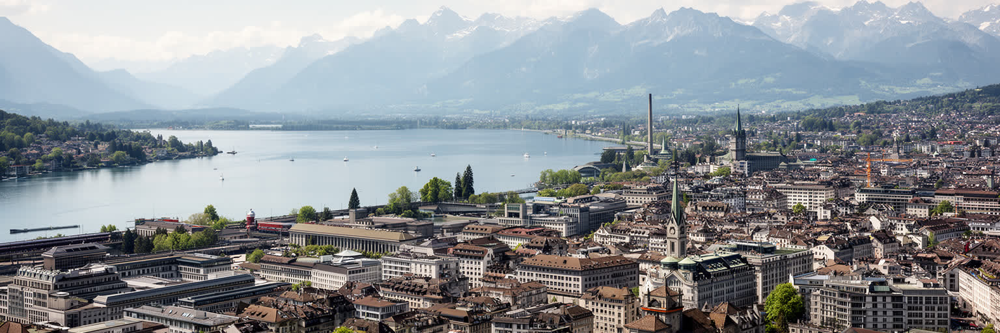
チューリッヒを読むことは、小さく整った都市の中に、世界市場、知識、移民労働、住宅問題、気候適応が圧縮されていることを見る作業です。湖とリマト川は都市に美しい尺度を与え、丘と旧市街は歩きやすい密度を作ります。金融と保険は国際資本を動かし、大学と研究機関は未来の技術と知識を生みます。鉄道とトラムは高い生活の質を支え、空港は都市を欧州と世界へつなぎます。文化と食は、ドイツ語圏の秩序だけでは説明できない多言語の生活を見せます。FC ZurichやGrasshopperの応援、ZSC Lionsの氷上の熱、Sechseläutenの炎、Street Paradeの低音、冬市の光も同じ都市の表情です。一方で、住宅費と物価は高く、都市の便利さを支える人ほど中心部から遠ざかりやすいです。豊かで安全な街という評価は重要ですが、それだけでは、移民の資格、学生の住まい、サービス労働、夜の文化、気候リスク、見えにくい貧困を十分に捉えられません。チューリッヒの特別さは、巨大都市のスケールではなく、世界都市の機能をきわめて近い距離に収めている点にあります。中央駅から湖畔、旧市街、金融街、大学、住宅地へ短時間で移れることは、都市の力であると同時に、限られた土地をめぐる緊張でもあります。訪問者は湖畔の静けさに惹かれますが、住民は家賃、通勤、言語、保育、物価、気候への備えとともに暮らします。朝の霧、鐘、トラム音、雪、川風、コーヒーとパンの匂いまで含めて、富と日常が近い街です。